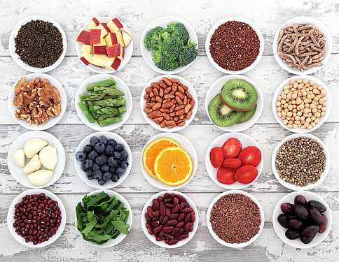

About
Blog
Careers
Services

NEW RECIPES ALERT
Discover the Latest Additions to Grandma's Kitchen Recipe Collection
PhotoMaster...
Explore New
UPCOMING EVENTS
Join Us for Grandma's Kitchen Special Cooking Classes and Workshops
KitchenHacks...
Explore New
SEASONAL SPECIALS
Taste the Season with Grandma's Kitchen's Freshly Baked Autumn Treats
FoodGuide...
Explore New
FROM THE ARCHIVES
Revisiting Timeless Dishes and Memories from Grandma's Kitchen's Heritage
SuperFoodie...
Explore New